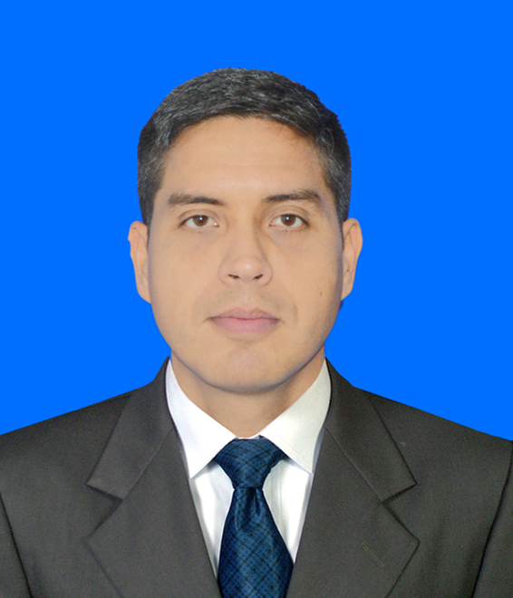

Frank Javier López Párica
Calle 72 G # 3-47 Norte - Cali Colombia
Descripción Personal
C.C. 13.636.839
Número: 3197283851
E-mail: lopezfrankjavier@gmail.com
Estudios Realizados:
Estudios Secundarios: U.E.I. Atenas de Sabana Grande - Caracas Venezuela (1996-1999)
Universidad: CUN - Corporacion Unificada Nacional de Educación Superior Bogotá Colombia (2022)
Experiencia Laboral:
Empresa: Andrés Chamorro Iluminacion SAS. Cargo: Auxiliar de Montaje (2017-2021)
Empresa: Independiente. Cargo: Vendedor al por Mayor en Accesorios para Consolas de Videojuegos - Caracas Venezuela (2010-2017)
Habilidades:
Pensamiento Crítico
Capacidad de Asociación
Razonamiento
Empatía
Autoconocimiento
Paciencia
Solución de Problemas
Flexibilidad
Proactivo
Hobbies:
Videojuegos
Correr
Hacer ejercicios fisícos
Leer
Espectativas
Deseo formarme como programador en Soy Henry y así poder tener las herramientas necesarias que me permitan empezar a trabajar demanera eficiente y así poder ser nuevamente una persona independiente, un padre responsable y un esposo cabeza de hogar. Al terminar mi formación deseo seguir aprendiendo cada día más de la mano de los que saben.